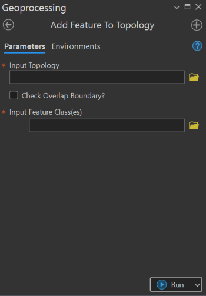

Add Feature to Topology
Summary¶
This tool is used to add feature class(es) and Rule to existing Topology.
There're three rules that were included.
- Rule 1:
Must Not Overlap (Area) - Rule 2:
Must Not Have Gap (Area) - Rule 3:
Must Not Overlap With (Area-Area)

Usage Note¶
- If the input topology already contains the input feature, tool won’t run.
- Chosen rules will be added to the input topology
- If feature classes share the boundary, their boundaries can be checked to find if they are overlapping with each other or not.
Parameters¶
This tool has some importances parameters as show in the table below.
| Parameter | Explanation | Data Type |
|---|---|---|
| Input_Topology | Existing topology to be checked. | DETopology |
| Check_Overlap_Boundary? (Optional) | Specifies whether the boundary of each polygon will be checked. • Check: Input polygons are included in the boundary overlap checking process. • Uncheck: Polygon boundaries are not checked. |
GPBoolean |
| Input_Feature_Class(es) | Feature class(es) to be checked. | GPMultiValue |
Tool Demo¶
Learn how to use the tool
Purchase Toolbox¶
See toolbox license package.